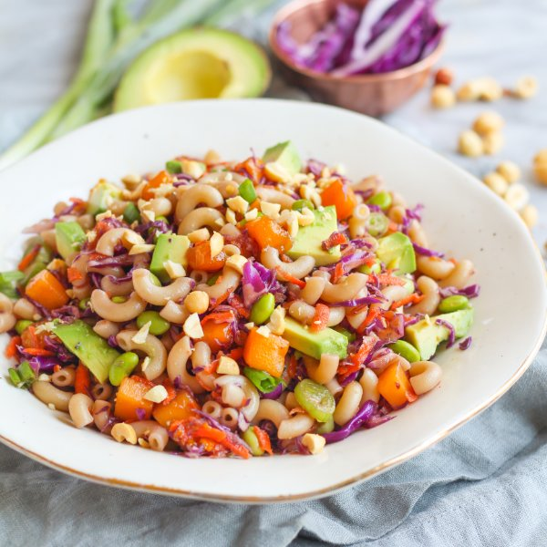

Pasta Salad with Mango, Avocado, Edamame & Sesame-Soy Dressing

Total Time
25 min
Nutrition (per serving)
694.1 kcalCalories
26.9 gProtein
98.8 gCarbs
24.8 gFat
Full nutrition table
| Calories | 694.1 kcal |
| Total fat | 24.8 g |
| Saturated fat | 3.6 g |
| Trans fat | 0 g |
| Cholesterol | 0 mg |
| Sodium | 101.3 mg |
| Carbohydrates | 98.8 g |
| Fiber | 17.3 g |
| Sugars | 25.9 g |
| Protein | 26.9 g |
| Potassium | 1628.7 mg |
| Calcium | 194.6 mg |
| Iron | 6.6 mg |
| Vitamin A | 565.5 IU |
| Vitamin C | 129.4 mg |
| Vitamin D | 0 IU |
Cookware
Ingredients
- 1avocado
- 4 mediumcarrots
- 2 cupsedamame
- 1 small bunchgreen onions (scallions)
- 10 ozmacaroni (elbow) pasta
- 1mango
- ¼ cuppeanuts, roasted unsalted
- 1 small headred cabbage
- brown sugar
- rice vinegar
- salt
- soy sauce
- toasted sesame oil
Steps
- Fill a medium saucepan halfway with hot water (from the tap), cover, and bring to a boil. Uncover, add salt and pasta, and stir for a few seconds. Cook until desired firmness, 8-10 minutes.1 tbsp salt
10 oz macaroni (elbow) pasta - Meanwhile, wash and dry the fresh produce.1 mango
1 avocado
4 medium carrots
1 small head red cabbage
1 small bunch green onions (scallions) - Place edamame in the colander and rinse under hot, running water (from the tap) to defrost; set aside to drain.2 cups edamame
- Combine soy sauce, oil, vinegar, and sugar in a large bowl; whisk to combine the dressing.¼ cup soy sauce
2 tbsp toasted sesame oil
4 tsp rice vinegar
1 tsp brown sugar - Peel mango and slice the flesh away from the pit, starting with the flat sides. Small dice and add to the bowl with the dressing.
- Halve and pit the avocado. Slice lengthwise and crosswise while still in the skin and scoop out with a spoon. Add to the bowl.
- Using a box grater, coarsely grate the carrots; add to the bowl.
- Trim off and discard the root end of the cabbage; halve the cabbage lengthwise and cut out the core; thinly slice crosswise and add to the bowl.
- Trim green onions; cut crosswise into ¼-inch pieces and add to the bowl.
- Roughly chop peanuts and add to the bowl along with the edamame.¼ cup peanuts, roasted unsalted
- Once pasta is done, drain and rinse under cool water. Add pasta to the bowl and toss to combine the salad.
- To serve, divide salad between bowls. Enjoy!